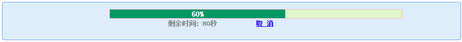

No JQuery、No BootStrap，just tssJS
一个任性的10年JAVA老猿的Web尝试
tssJS是什么
tssJS是在开发它山石应用基础平台的过程中衍生出来的一个Web框架，包含tssJS核心模块和多个UI组件，兼容Chrome、IE11、Firefox。tssJS从整体上非常有效的完成了它山石在web界面及交互上的需求，框架自身小巧灵活，能像JQuery一样支持功能扩展。限于个人对Web接触时间及水平有限，tssJS很多地方尚需进一步完善，后续将还会在实际的运用中不断的完善它。
为什么不选用JQuery、BootStrap，而要自己费尽心力去搭一套，出发点是想尽可能深入细致的去学通Web知识。个人对Web前台开发的认知是：它不同于后端那样讲究理性逻辑，而是侧重用户体验和可用性的前台开发更偏感性，如果说后台开发是计算纸上写好的各种算式，那前台开发更似在一张白纸上画画。我不希望一上来就拿着个万花筒一样工具去涂画，更希望从基础素描开始，一笔一划的去学。虽难，但值得一试，反正没进度压力。自己动手写框架是一个进阶的量身打造的过程，弱水三千，只取一瓢。同时也能避免流行框架存在的容易发胖、过度设计、更新迭代速度快、往前兼容性差等一些问题。
如果是站在一个有进度压力的项目负责人的角度，估计我也会毫不犹豫的去选择现下流行的成熟框架来完成工作任务。但对于喜欢知根知底，且有闲时间的个人来说，从零开始，自己设计打造一组适合自己用的称手的工具框架，无疑是非常有吸引力的。言归正传，下面结合一些测试用例，简单介绍一下tssJS都有哪些功能。
整体架构
(function( window, undefined ) {
// 构造tssJS对象
var tssJS = function( selector, parent ) {
return new tssJS.fn.init( selector, parent, rootTssJS );
}
// 工具函数 Utilities
// 浏览器测试
// 事件处理 Event
// 选择器
// DOM遍历、操作
// CSS操作
// ajax
// 插件扩展接口
tssJS.extend = tssJS.fn.extend = function() {
......
}
tssJS.extend 对tssJS本身的属性和方法进行了扩展
tssJS.fn.extend tssJS.fn（原型）的属性和方法进行了扩展
window.tssJS = window.$ = tssJS; // 和大多JS框架一样，我也喜欢用$作为快捷符号
})(window);
熟悉jQuery源码的同学一眼就能看出，这是仿jQuery写的。tssJS框架的核心和JQuery一样，就是从DOM文档中匹配元素并对其执行操作。通过向tssJS(selector, parent)传入一个选择器定位到要查找的元素，封装成tssJS对象，再对其进行后续操作。
选择器
选择器的实现依赖原生的DOM选择器querySelector及querySelectorAll，它们的使用非常的简单，和CSS的写法完全一样。HTML5引入的这两原生方法，是我敢于自己动手写tssJS的原因之一，jQuery之所以流行，很大原因是它强大的选择器功能，而现在HTML5已能天然支持。虽然当下的一些老式浏览器（IE6/7/8）兼容性上存在一些问题，但如果着眼几年后，这些老式浏览器总会有退出历史舞台的一天的，而且IE11已经开始全面拥抱W3C标准。tssJS的选择器支持多种方式：
var $div1 = $("#div1");
var $div2 = $(".container");
var $div3 = $(".c2 div", $div2[0]);
$()
$(element)
$(function(){})
DOM(HTML)及CSS样式操作
提供了常见的查找、创建、删除Element，设置Element样式，定位Element位置等方法。示例：
$("#div1").css("backgroundColor", "#565656").addClass("cc").removeClass("cc")
.html('...')
.hover( function() { ... }, function() { ... } )
.toggle(function() { ... }, function() { ... } )
.click( function() { ... } )
DOM(XML)操作
提供了常见的创建、删除、查找XML Node，及操作CDATA节点等方法
Event事件处理
提供了常见的添加、删除、取消事件，阻止冒泡，添加模拟事件等方法
AJAX封装结构
AJAX模块除了提供提供基本ajax操作以外，还结合TSS的异常机制，对请求发生异常时的提示信息进行优化，还和单点登录模块结合，对需要登录后才能访问数据服务进行过滤，没有登录的自动导引至登录窗口，在用户完成登录后再自动重发ajax请求，且无需跳转到登录页。这样可以有效防止用户在长时间录入信息时，因登录超时而造成录入数据丢失。
$.ajax({
url : url,
method : "GET", // GET/POST/PUT/DELETE
headers : {},
params : {},
type : 'json', // or xml/txt
async：true, // or false
ondata : function() { },
onresult : function() { },
onexception : function() { },
onsuccess : function() { }
});
使用JSONP跨域调用
$.JSONP.getJSON(url, params, callback);
右键菜单菜单组件
和其它组件（tree、grid等）配合使用，可方便的定义各种操作菜单。
Form组件
把定义好的Form模板（支持XML和JSON两种格式）直接生成html表单，绑定数据源，展示数据字段。可用于新建、编辑单个后台的实体对象。Form模板可以依据实体对象的属性自动生成，减少前台的配置工作。点击查看示例
$.F(fomrId, xmlTemplate);
$.json2Form(formId, jsonTemplate)
Grid组件
把定义好的Grid模板（支持XML格式）绑定数据源后直接生成html table， 展示数据列表。可用于批量展示后台的实体对象列表。Grid模板可以依据实体对象的属性自动生成，减少前台的配置工作。
Tree组件
树形控件的类型包括单选树、多选树两种，可分别各类资源的展示和选择。不限层次深度，数据格式支持XML和JSON两种。
Layout布局
用于界面布局，支持多tab页展示，每个tab页还可以多步骤展示。
进度条
用于读取或写入大数据时的进度提示，增强操作友好性。
时间选择器
一个简洁朴素的时间控件。点击查看示例